🕸️ 地底暴君
Tyrants of the Underdark · 设计：Peter Lee & Rodney Thompson · Gale Force Nine 出版 · 2–4 人 · 官方英文规则书全文翻译（24 页 · AI 辅助机翻）
本页收录《地底暴君》（Tyrants of the Underdark, 2016）的原版官方规则书全部 24 页（底本：BGG 官方上传（Gale Force Nine 2016-05 上传的一版规则书；GF9 官网支持页已下线），tyrants-of-the-underdark-rulebook），逐页随图排列，点击任意图片即可放大查看；每页下方默认折叠了该页的 AI 辅助中文机翻对照，需要时可展开。规则内容归 Gale Force Nine 及版权方所有，收录仅供个人学习查阅。
整理说明：机翻对照按本站术语口径对齐（牌库/手牌/回合/轮/板块/指示物等），PDF 图文混排页的语序可能与原书视觉顺序略有出入；规则细节请一律以页面上方原书页面为准。
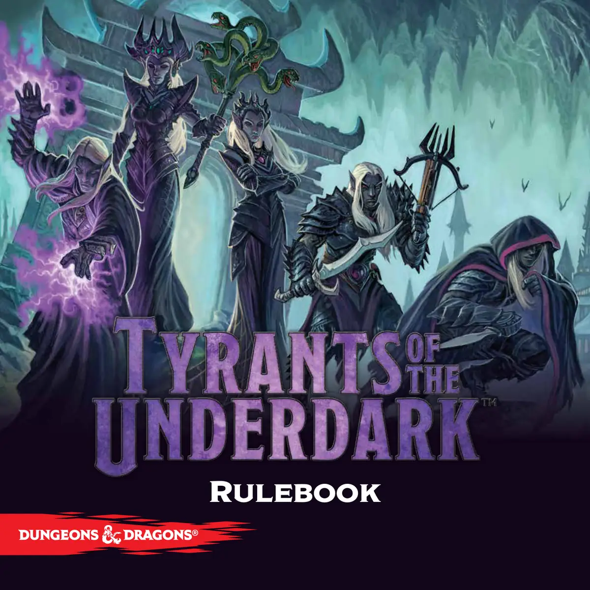
📝 第 1 页 AI 机翻对照（点击展开）
i
规则书
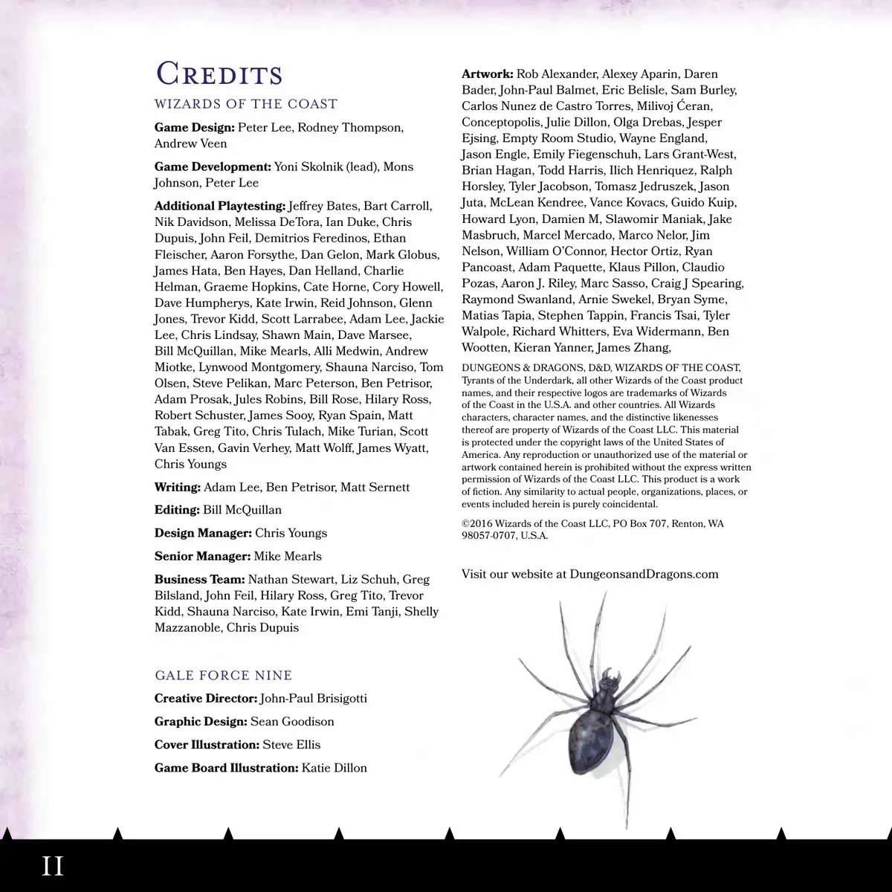
📝 第 2 页 AI 机翻对照（点击展开）
ii
鸣谢
威世智 (WIZARDS OF THE COAST)
游戏设计：Peter Lee, Rodney Thompson, Andrew Veen
游戏开发：Yoni Skolnik (主管), Mons Johnson, Peter Lee
额外测试：Jeffrey Bates, Bart Carroll, Nik Davidson, Melissa DeTora, Ian Duke, Chris Dupuis, John Feil, Demitrios Feredinos, Ethan Fleischer, Aaron Forsythe, Dan Gelon, Mark Globus, James Hata, Ben Hayes, Dan Helland, Charlie Helman, Graeme Hopkins, Cate Horne, Cory Howell, Dave Humpherys, Kate Irwin, Reid Johnson, Glenn Jones, Trevor Kidd, Scott Larrabee, Adam Lee, Jackie Lee, Chris Lindsay, Shawn Main, Dave Marsee, Bill McQuillan, Mike Mearls, Alli Medwin, Andrew Miotke, Lynwood Montgomery, Shauna Narciso, Tom Olsen, Steve Pelikan, Marc Peterson, Ben Petrisor, Adam Prosak, Jules Robins, Bill Rose, Hilary Ross, Robert Schuster, James Sooy, Ryan Spain, Matt Tabak, Greg Tito, Chris Tulach, Mike Turian, Scott Van Essen, Gavin Verhey, Matt Wolff, James Wyatt, Chris Youngs
写作：Adam Lee, Ben Petrisor, Matt Sernett
编辑：Bill McQuillan
设计经理：Chris Youngs
高级经理：Mike Mearls
商务团队：Nathan Stewart, Liz Schuh, Greg Bilsland, John Feil, Hilary Ross, Greg Tito, Trevor Kidd, Shauna Narciso, Kate Irwin, Emi Tanji, Shelly Mazzanoble, Chris Dupuis
GALE FORCE NINE
创意总监：John-Paul Brisigotti
平面设计：Sean Goodison
封面插图：Steve Ellis
游戏版图插图：Katie Dillon
艺术：Rob Alexander, Alexey Aparin, Daren Bader, John-Paul Balmet, Eric Belisle, Sam Burley, Carlos Nunez de Castro Torres, Milivoj Ćeran, Conceptopolis, Julie Dillon, Olga Drebas, Jesper Ejsing, Empty Room Studio, Wayne England, Jason Engle, Emily Fiegenschuh, Lars Grant-West, Brian Hagan, Todd Harris, Ilich Henriquez, Ralph Horsley, Tyler Jacobson, Tomasz Jedruszek, Jason Juta, McLean Kendree, Vance Kovacs, Guido Kuip, Howard Lyon, Damien M, Slawomir Maniak, Jake Masbruch, Marcel Mercado, Marco Nelor, Jim Nelson, William O'Connor, Hector Ortiz, Ryan Pancoast, Adam Paquette, Klaus Pillon, Claudio Pozas, Aaron J. Riley, Marc Sasso, Craig J Spearing, Raymond Swanland, Arnie Swekel, Bryan Syme, Matias Tapia, Stephen Tappin, Francis Tsai, Tyler Walpole, Richard Whitters, Eva Widermann, Ben Wootten, Kieran Yanner, James Zhang,
《地下城与龙》(DUNGEONS & DRAGONS), D&D, 威世智 (WIZARDS OF THE COAST), 地底暴君 (Tyrants of the Underdark)，所有其他威世智产品名称及其各自的商标均为威世智在美国及其他国家的商标。所有威世智的角色、角色名称及其独特形象均为威世智有限责任公司的财产。本材料受美国版权法保护。对本材料的任何复制或未经授权的使用都是
未经威世智有限责任公司(Wizards of the Coast LLC)的明确书面许可，禁止复制本文中的任何艺术作品。本产品为虚构作品。本文中提及的与真实人物、组织、地点或事件的任何相似之处纯属巧合。
©2016 威世智有限责任公司(Wizards of the Coast LLC)，美国华盛顿州伦顿市邮政信箱707，邮编98057-0707。
访问我们的网站 DungeonsandDragons.com
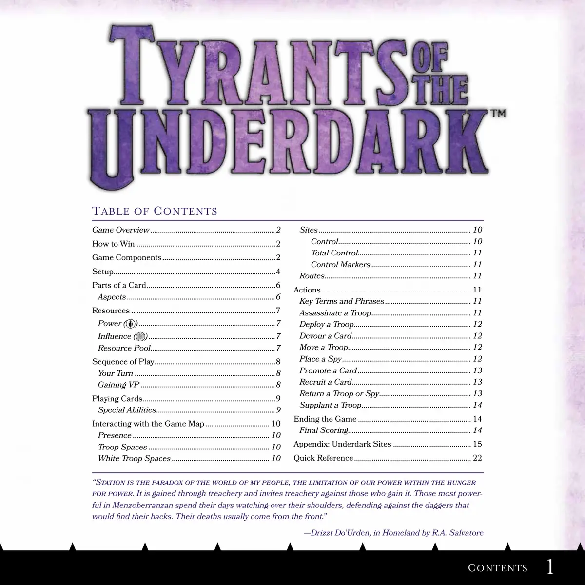
📝 第 3 页 AI 机翻对照（点击展开）
目录 1
游戏概述.................................................................2
如何获胜........................................................................2
游戏组件..........................................................2
设置...................................................................................4
卡牌的组成部分..................................................................6
方面.............................................................................6
资源...........................................................................7
力量 (
).......................................................................7
影响力 (
)..................................................................7
资源池................................................................7
游戏流程..............................................................8
你的回合.........................................................................8
获得VP......................................................................8
打出卡牌....................................................................9
特殊能力.............................................................9
与游戏地图互动.................................. 10
存在感....................................................................... 10
军队格............................................................... 10
白色军队格................................................... 10
地点............................................................................... 10
控制.................................................................... 10
完全控制.......................................................... 11
控制标记.................................................... 11
路线........................................................................... 11
行动............................................................................. 11
关键术语和短语............................................. 11
刺杀军队................................................... 11
部署军队............................................................ 12
吞噬卡牌............................................................. 12
移动军队............................................................... 12
放置间谍.................................................................. 12
提升卡牌........................................................... 13
招募卡牌............................................................. 13
返还军队或间谍............................................... 13
目录
取代部队........................................................ 14
游戏结束........................................................... 14
最终计分............................................................... 14
附录：幽暗地域地点......................................... 15
快速参考............................................................. 22
"地位是我族人世界中的悖论，是我们对权力的渴望中权力的局限。它通过背叛获得，并会招致那些获得它的人的背叛。在幽暗地域门诺兹巴最强大的人终日警惕，防范着那些会刺向他们背后的匕首。他们的死亡通常来自正面。"
——崔斯特·杜垩登，出自R.A.萨尔瓦多的《故土》
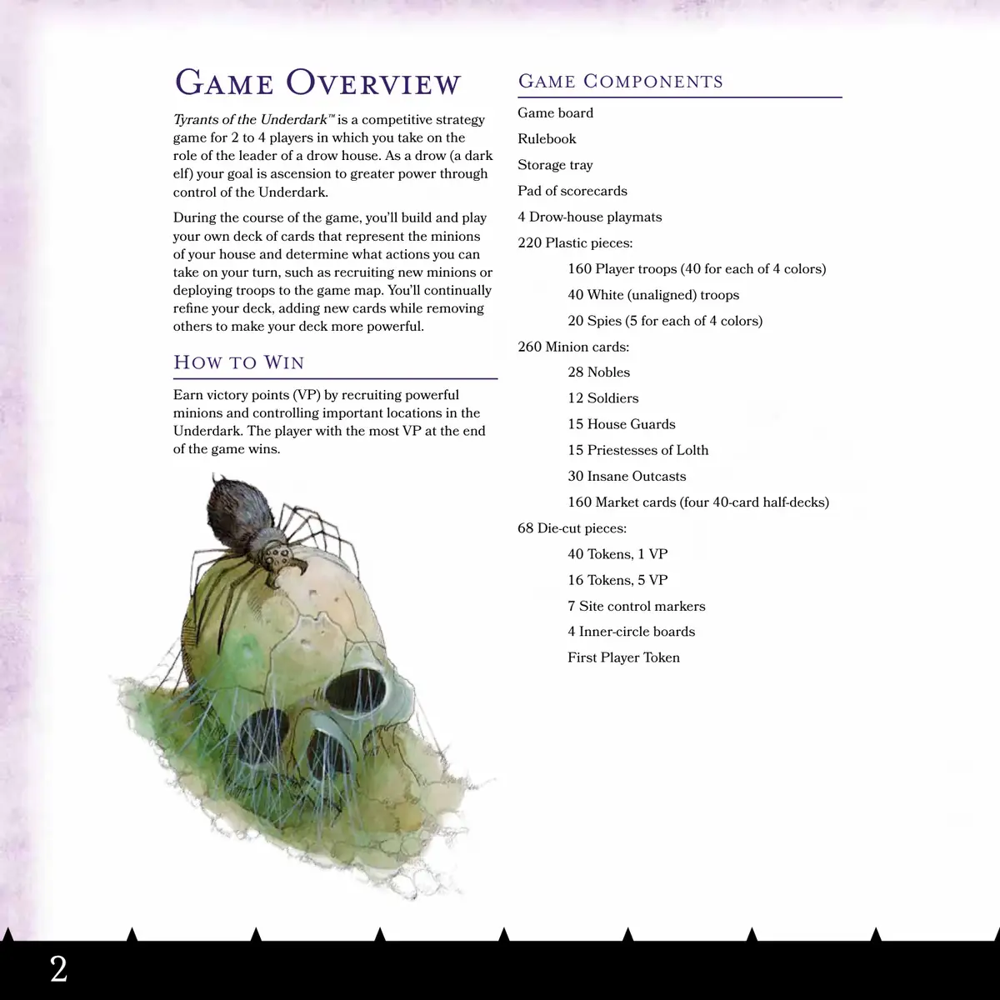
📝 第 4 页 AI 机翻对照（点击展开）
游戏概览
通过招募强大的仆从并控制幽暗地域的重要地点来获得胜利点（VP）。游戏结束时拥有最多VP的玩家获胜。
《幽暗地域暴君™》(Tyrants of the Underdark™)是一款2-4人的竞技策略游戏，在游戏中你将扮演一个卓尔家族的领袖。作为一名卓尔（黑暗精灵），你的目标是通过控制幽暗地域来获得更大的权力。
在游戏过程中，你将构建并使用自己的牌组，这些牌组代表你家族的仆从，并决定你在回合中可以采取的行动，例如招募新的仆从或将部队部署到游戏地图上。你将不断优化你的牌组，添加新牌同时移除其他牌，使你的牌组变得更加强大。
如何获胜
游戏组件
游戏版图
规则书
收纳托盘
记分本
4张卓尔家族游戏垫
220个塑料件：
160个玩家部队（4种颜色各40个）
40个白色（中立）部队
20个间谍（4种颜色各5个）
260张仆从卡牌：
28张贵族
12名士兵
15名家族守卫
15名罗丝的女祭司
30名疯狂的流亡者
160张市场卡牌（四组40卡半牌库）
68个模切件：
40个1VP指示物
16个5VP指示物
7个地点控制标记
4个内圈版图
起始玩家标记
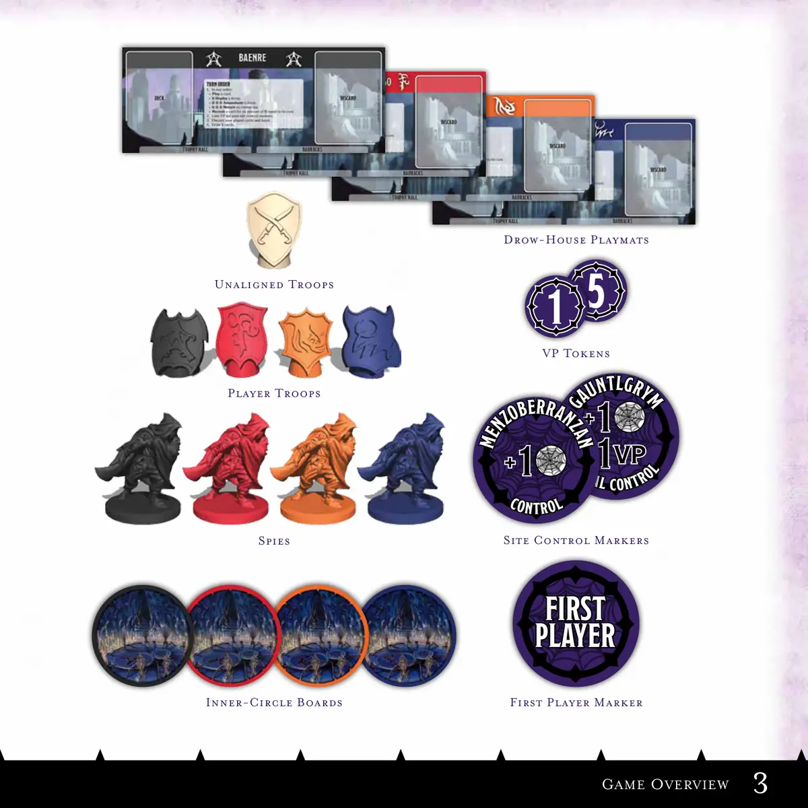
📝 第 5 页 AI 机翻对照（点击展开）
游戏概览 3
卓尔家族游戏垫
地点控制标记
起始玩家标记
内圈版图
玩家部队
间谍
VP指示物
中立部队
G
A
U
N
T
L
G
R
Y
M
t
o
t
a
l
c
o
n
t
r
o
l
+ VP
+
M
E
N
Z
O
B
E
R
R
A
N
Z
A
N
c
o
n
t
r
o
l
+
起始玩家
玩家
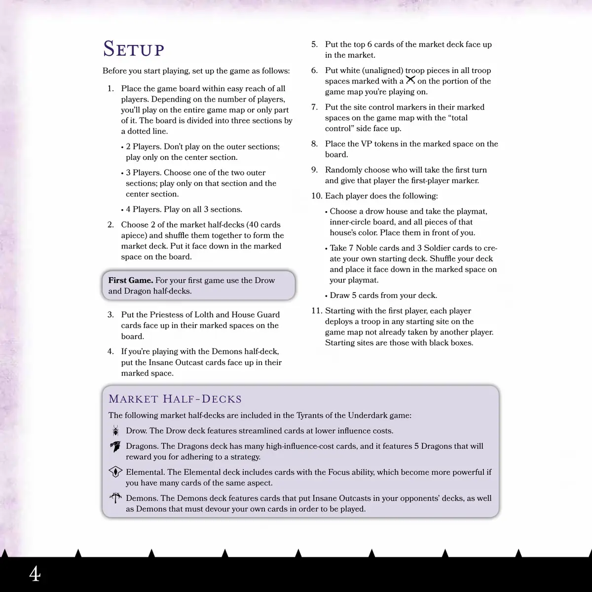
📝 第 6 页 AI 机翻对照（点击展开）
市场半牌库
《幽暗领主暴君》游戏包含以下市场半牌库：
卓尔（Drow）。卓尔牌库包含影响力成本较低的精简卡牌。
龙族（Dragons）。龙族牌库包含许多高影响力成本的卡牌，并包含5张龙族卡牌，它们会奖励你坚持某种策略。
元素（Elemental）。元素牌库包含具有"专注"能力的卡牌，如果你拥有许多相同方面的卡牌，这些卡牌会变得更强大。
恶魔（Demons）。恶魔牌库包含将疯狂流亡者（Insane Outcasts）放入对手牌库的卡牌，以及必须吞噬你自己的卡牌才能打出的恶魔。
设置
- 将牌库顶部的6张牌面朝上放在市场中。
- 在你所玩的版图部分，将白色（无阵营）的部队指示物放在所有标记有
的部队区域中。
7. 将领地控制指示物放在版图上标记的区域中，"完全控制"面朝上。
8. 将VP指示物放在版图上的标记区域中。
9. 随机选择谁将先手，并将先手标记交给该玩家。
10. 每位玩家执行以下操作：
• 选择一个卓尔家族，并拿取对应颜色的游戏垫、内圈版图和所有该家族的指示物。将它们放在你面前。
• 拿取7张贵族卡和3张士兵卡来创建你自己的起始牌库。洗匀你的牌库，并将其面朝下放在你游戏垫上的标记区域中。
• 从你的牌库中摸5张牌。
11. 从先手玩家开始，每位玩家在游戏版图上任何未被其他玩家占据的起始站点部署一个部队。起始站点是那些带有黑色方框的站点。
首局游戏。对于你的第一局游戏，使用卓尔和龙族半牌库。
在你开始游戏之前，按以下方式设置游戏：
1. 将游戏版图放在所有玩家容易触及的位置。根据玩家数量，你将在整个游戏版图或仅部分版图上进行游戏。版图由虚线分为三个部分。
• 2名玩家。不要在外部区域游戏；仅在中部区域游戏。
• 3名玩家。选择两个外部区域中的一个；仅在该区域和中部区域游戏。
• 4名玩家。在所有3个区域游戏。
- 选择2个市场半牌库（各40张），将它们洗匀组成牌库。将其面朝下放在版图上的标记区域中。
3. 将罗丝（Lolth）的女祭司和家族卫兵卡牌面朝上放在它们在版图上的标记区域中。
- 如果你使用恶魔半牌库，将疯狂流亡者卡牌面朝上放在它们在版图上的标记区域中。
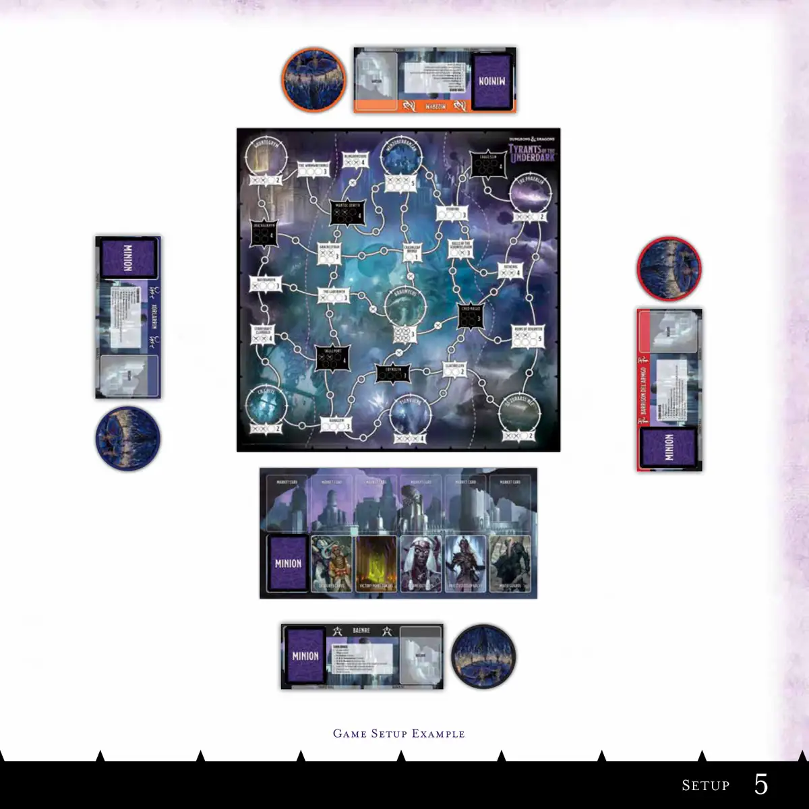
📝 第 7 页 AI 机翻对照（点击展开）
设置 5
游戏设置示例
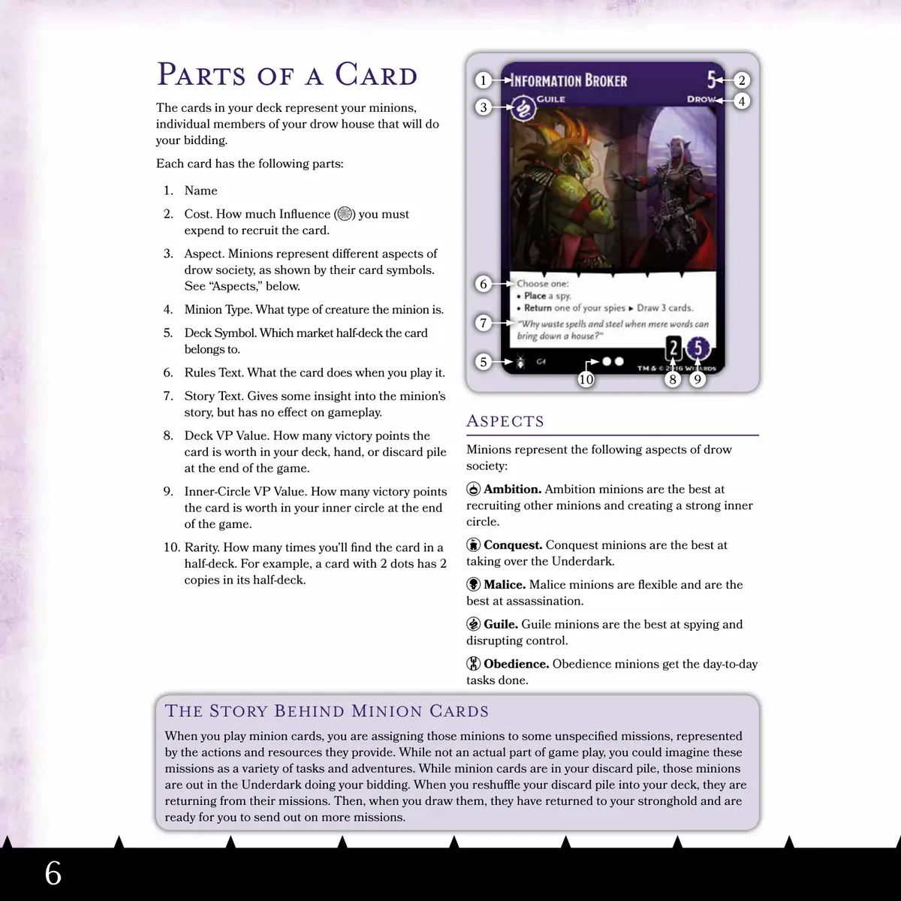
📝 第 8 页 AI 机翻对照（点击展开）
卡牌的组成部分
你牌库中的卡牌代表你的爪牙，
你卓尔家族中会听从你命令的个体成员。
每张卡牌包含以下部分：
1. 名称
- 费用。招募这张卡牌需要消耗多少影响力（ ）。
- 面相。爪牙代表卓尔社会的不同面相，如卡牌符号所示。参见下文的"面相"。
- 爪牙类型。该爪牙是什么类型的生物。
- 牌库符号。该卡牌属于哪个半牌库市场。
- 规则文本。你打出卡牌时，卡牌的效果。
- 故事文本。提供一些关于爪牙故事的见解，但对游戏玩法没有影响。
- 牌库胜利点价值。在游戏结束时，卡牌在你的牌库、手牌或弃牌堆中值多少胜利点。
- 核心圈胜利点价值。在游戏结束时，卡牌在你的核心圈中值多少胜利点。
- 稀有度。你会在半牌库中找到这张卡牌的次数。例如，有2个点的卡牌在其半牌库中有2张副本。
面相
爪牙代表卓尔社会的以下面相：
野心。野心爪牙最擅长招募其他爪牙和建立强大的核心圈。
征服。征服爪牙最擅长征服幽暗地域。
恶意。恶意爪牙灵活多变，最擅长暗杀。
狡诈。狡诈爪牙最擅长间谍活动和破坏控制。
服从。服从爪牙能完成日常任务。
爪牙卡牌背后的故事
当你打出爪牙卡牌时，你是指派这些爪牙去执行一些未指明的任务，这些任务由它们提供的效果和资源代表。虽然不是游戏玩法的实际部分，但你可以将这些任务想象为各种任务和冒险。当爪牙卡牌在你的弃牌堆中时，那些爪牙正在幽暗地域执行你的命令。当你将弃牌堆洗入牌库时，它们正在从任务中返回。然后，当你摸到它们时，它们已经回到了你的要塞，准备让你派去执行更多任务。
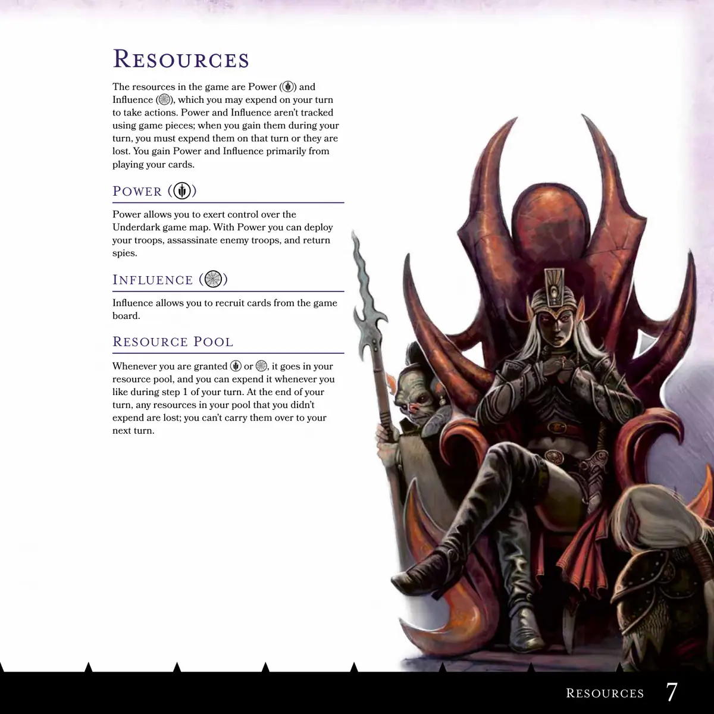
📝 第 9 页 AI 机翻对照（点击展开）
资源 7
资源
力量（）
力量让你能够对幽暗地域游戏地图施加控制。通过力量，你可以部署你的部队，暗杀敌方部队，并召回间谍。
影响力（）
影响力让你能够从游戏版图上招募卡牌。
资源池
每当获得或时，它会进入你的资源池，你可以在你回合的第1阶段随时消耗它。在你的回合结束时，你未消耗的任何资源都会丢失；你不能将它们带到你的下一个回合。
游戏中的资源是力量（）和影响力（），你可以在你的回合上消耗它们来执行行动。力量和影响力不使用游戏棋子来追踪；当你在你的回合中获得它们时，你必须在该回合上消耗它们，否则它们就会丢失。你主要通过打出你的卡牌来获得力量和影响力。
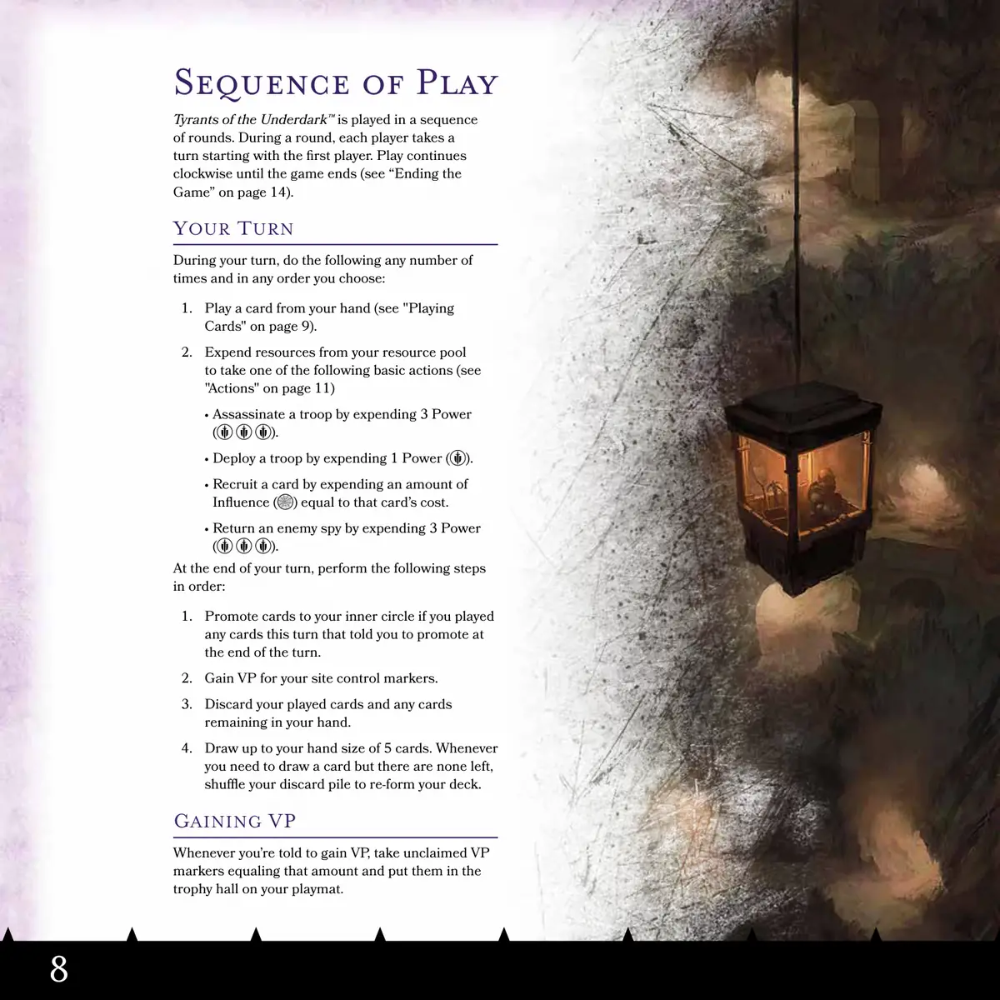
📝 第 10 页 AI 机翻对照（点击展开）
游戏流程
《幽暗地域暴君™》通过一系列回合进行游戏。在一个回合中，每个玩家从第一位玩家开始轮流行动。游戏继续顺时针进行，直到游戏结束（参见第14页的"游戏结束"）。
你的回合
在你的回合中，你可以按任意次数和任意顺序执行以下操作：
- 从你的手牌中打出一张卡牌（参见第9页的"打出卡牌"）。
2. 从你的资源池中消耗资源来执行以下基本行动之一（参见第11页的"行动"）
• 消耗3点力量（）来暗杀一支部队。
• 消耗1点力量（）来部署一支部队。
• 消耗等同于该卡牌费用的点数的影响力（）来招募一张卡牌。
• 消耗3点力量（）来召回一张敌方间谍。
在你的回合结束时，按顺序执行以下步骤：
1. 如果你本回合打出了任何卡牌指示你在回合结束时晋升，则将卡牌晋升到你的核心圈。
- 为你的据点控制标记获得VP。
3. 弃掉你已打出的卡牌和手牌中剩余的任何卡牌。
- 摸牌直到你的手牌数达到5张。每当需要摸牌但没有剩余卡牌时，洗混你的弃牌堆以重新组成你的牌库。
获得VP
每当被告知获得VP时，取等于该数量的未声明VP标记，并将它们放在你的游戏垫上的奖杯厅中。
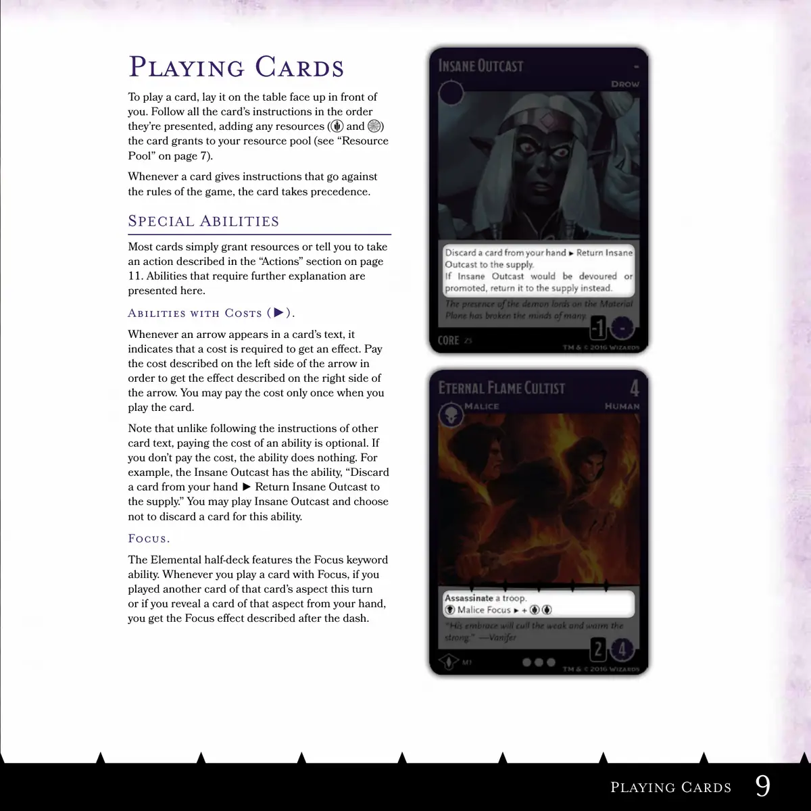
📝 第 11 页 AI 机翻对照（点击展开）
卡牌 9
卡牌
要打出一张卡牌，将其正面朝上放在你面前的桌子上。按照卡牌上指令的顺序执行所有指令，并将卡牌授予的任何资源（
和
）添加到你的资源池中（参见第7页的"资源池"）。
每当卡牌给出的指令与游戏规则相抵触时，卡牌的指令优先。
特殊能力
大多数卡牌只是授予资源或要求你执行"行动"部分（第11页）中描述的行动。需要进一步解释的能力在此处说明。
带成本的能力（▶）。
每当卡牌文本中出现箭头时，表示需要支付成本才能获得效果。支付箭头左侧描述的成本以获得箭头右侧描述的效果。打出卡牌时，你只能支付一次该成本。
请注意，与其他卡牌文本的指令不同，支付能力成本是可选的。如果你不支付成本，该能力不会生效。例如，疯狂的放逐者（Insane Outcast）具有能力："弃掉你手牌中的一张卡牌 ▶ 将疯狂的放逐者返回到牌库中。"你可以打出疯狂的放逐者，并选择不为该能力弃掉一张卡牌。
专注（Focus）。
元素半副牌（Elemental half-deck）具有专注（Focus）关键字能力。每当你打出带有专注的卡牌时，如果你在本回合打出了该卡牌同类型的另一张卡牌，或者你从手牌中展示了该类型的卡牌，你将获得破折号后描述的专注效果。
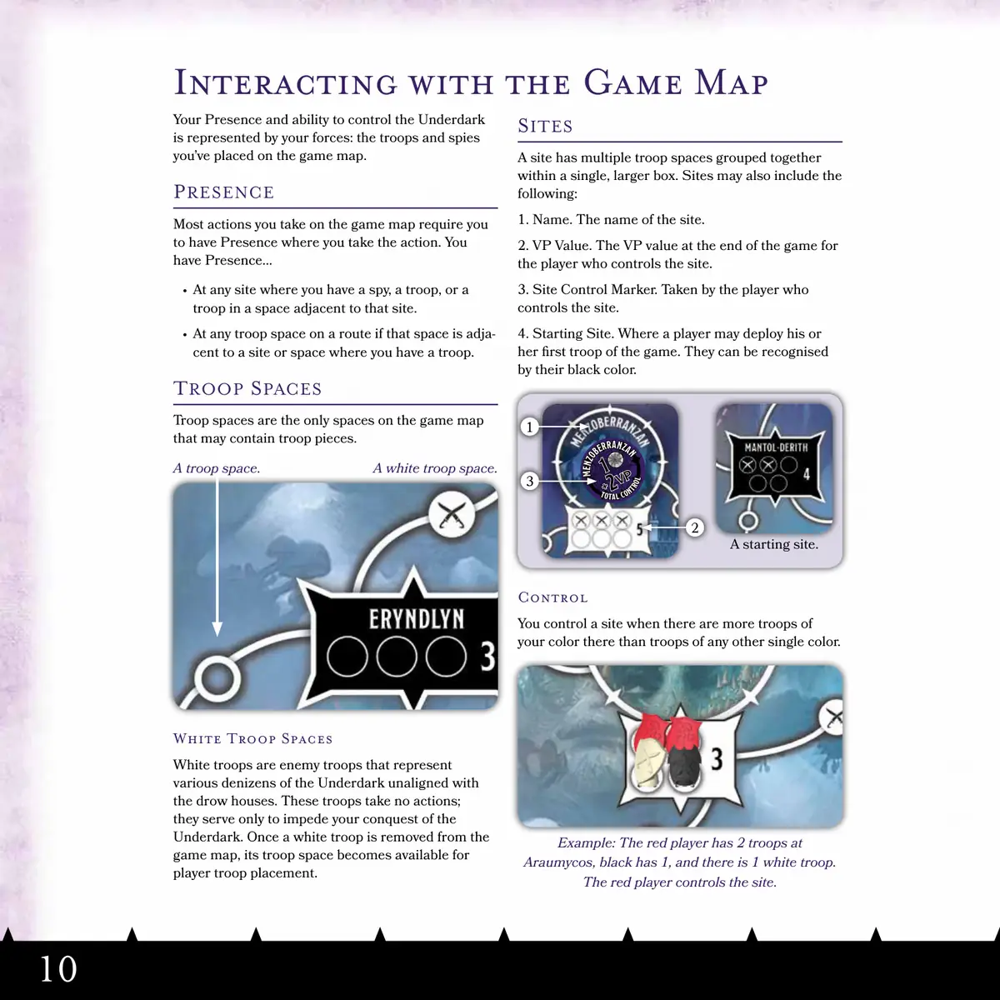
📝 第 12 页 AI 机翻对照（点击展开）
M
E
N
Z
O
B
E
R
R
A
N
Z
A
N
t
o
t
a
l
c
o
n
t
r
o
l
+ VP
与游戏版图的互动
地点
你对幽暗地域的存在感和控制能力由你的部队代表：你放置在游戏版图上的军队和间谍。
存在感
你在游戏版图上执行的大多数行动都需要你在行动地点拥有存在感。你在以下情况拥有存在感...
• 在你拥有间谍、军队或军队位于该地点相邻格的任何地点。
• 在路线上的任何军队格，如果该格与你拥有军队的地点或格相邻。
军队格
军队格是游戏版图上唯一可以放置军队棋子的格。
白色军队格
白色军队代表幽暗地域中与卓尔家族结盟的各种生物。这些军队不执行任何行动；它们只会阻碍你对幽暗地域的征服。一旦白色军队从游戏版图上移除，其军队格就可供玩家军队放置。
一个地点有多个军队格，它们被组合在一个更大的方框内。地点还可能包括以下内容：
- 名称。地点的名称。
- VP价值。游戏结束时控制该地点的玩家的VP价值。
- 地点控制标记。由控制该地点的玩家获得。
4.起始地点。玩家可以在其部署游戏的第一支军队。它们可以通过黑色被识别。
控制
当一个地点的你的颜色军队多于任何其他单一颜色的军队时，你就控制该地点。
示例：红色玩家在Araumycos（阿拉乌米科斯）有2支军队，黑色有1支，还有1支白色军队。红色玩家控制该地点。
一个军队格。
一个白色军队格。
一个起始地点。
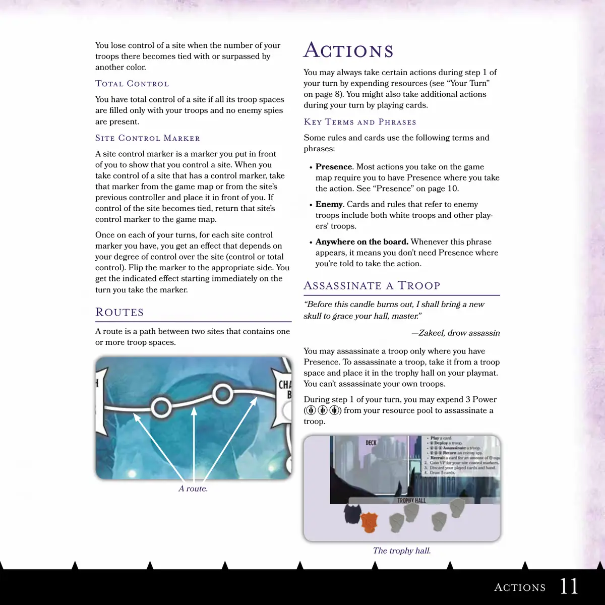
📝 第 13 页 AI 机翻对照（点击展开）
行动 11
当一个据点上的你的军队数量被其他颜色的军队追平或超过时，你就失去了对该据点的控制。
完全控制
如果你完全控制一个据点，意味着该据点的所有军队空间仅被你的军队占据，且没有敌方间谍存在。
据点控制标记
据点控制标记是你放在自己面前以表明你控制一个据点的标记。当你控制一个有控制标记的据点时，从游戏版图或该据点的前任控制者处取走该标记，并将其放在自己面前。如果对该据点的控制变为平局，将该据点的控制标记返回游戏版图。
在你的每个回合中，每有一次，对于你拥有的每个据点控制标记，你会根据你对该据点的控制程度（控制或完全控制）获得一个效果。将标记翻到相应的一面。从你获得该标记的回合开始，你立即获得所示效果。
路线
路线是连接两个据点的一条路径，包含一个或多个军队空间。
一条路线。
行动
刺杀军队
在你的回合第1步，你总是可以通过消耗资源来执行某些行动（参见第8页"你的回合"）。你也可以通过出牌在你的回合中执行额外行动。
关键术语和短语
一些规则和卡牌使用以下术语和短语：
• 存在。你在游戏版图上执行的大多数行动都需要你在执行行动的地方拥有存在。参见第10页"存在"。
• 敌方。提及敌军的卡牌和规则既包括白色军队，也包括其他玩家的军队。
• 版图上的任何位置。每当出现此短语，意味着你不需要在被告知执行行动的地方拥有存在。
"在这支蜡烛燃尽之前，我必将为您的殿堂带来一个新的头颅，主人。"
——扎基尔，卓尔刺客
奖杯厅。
你只能在拥有存在的地方刺杀军队。要刺杀军队，从军队空间中取走它，并将其放置在你的玩家垫上的奖杯厅。你不能刺杀你自己的军队。
在你的回合第1步，你可以消耗3点力量(
)从你的资源池中刺杀一支军队。
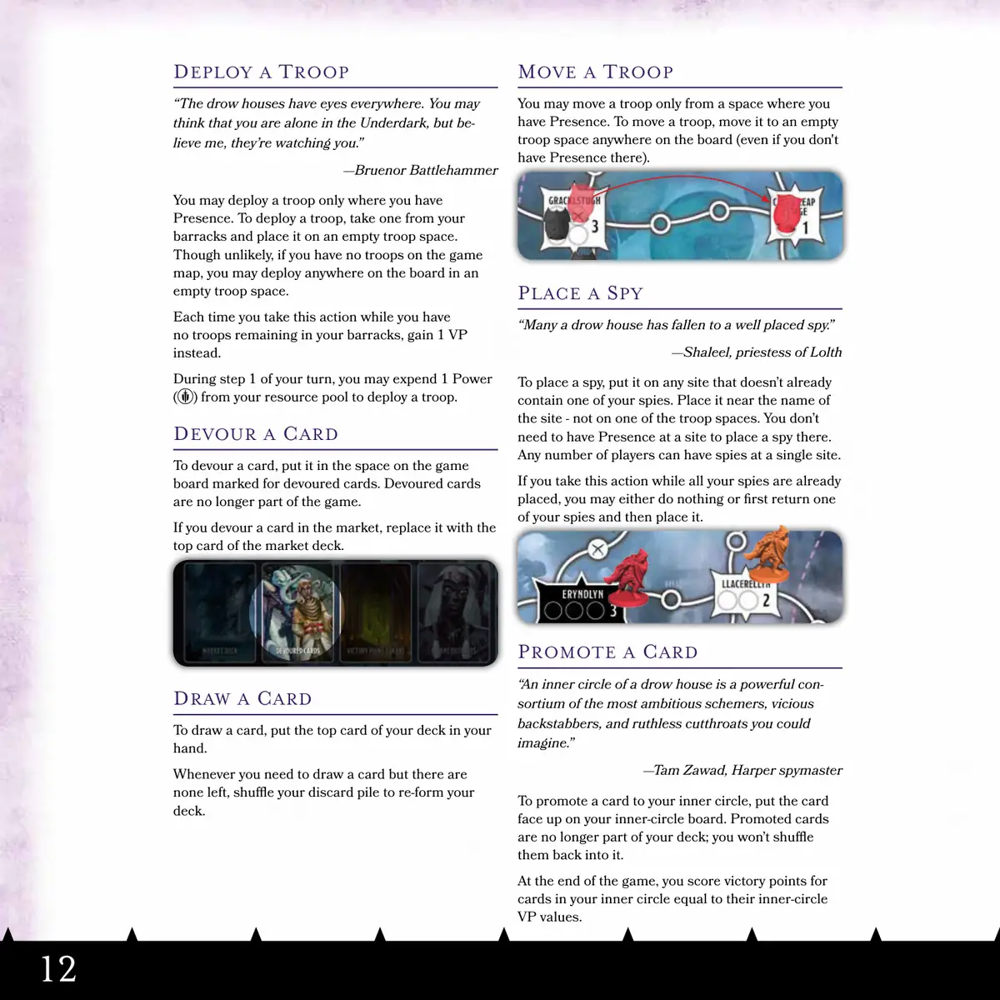
📝 第 14 页 AI 机翻对照（点击展开）
摸一张牌
部署一支军队
"卓尔家族的眼线无处不在。你可能以为在幽暗地域中独自行走，但相信我，他们正在监视你。"
——布鲁诺·战锤
你只能在有存在感的地方部署军队。要部署一支军队，从你的兵营中取出一个，并将其放置在空的军队格上。
虽然不太可能，但如果你的游戏地图上没有军队，你可以在版图上的任意空的军队格中部署。
每次你执行此行动时，如果你的兵营中没有剩余的军队，则获得1个VP代替。
在你的回合的第1步，你可以消耗1点能量（
）从你的资源池中部署一支军队。
吞噬一张牌
要吞噬一张牌，将其放置在游戏版图上标记为被吞噬牌的位置。被吞噬的牌不再是游戏的一部分。
如果你在市场中吞噬一张牌，用牌库顶部的牌替换它。
要摸一张牌，将你的牌库顶部的牌放入你的手牌。
每当你需要摸牌但没有剩余牌时，将你的弃牌堆洗牌重新组成你的牌库。
移动一支军队
你只能从有存在感的空间移动一支军队。要移动一支军队，将其移动到版图上任意空的军队格中（即使你在那里没有存在感）。
放置一个间谍
"许多卓尔家族都因放置得当的间谍而覆灭。"
——洛丝莉丝的女祭司莎莉尔
要放置一个间谍，将其放在任何尚未包含你一个间谍的地点。将其放置在地点名称附近——不是在军队格上。你不需要在某个地点有存在感就可以在那里放置间谍。
任意数量的玩家可以在单个地点拥有间谍。
如果你执行此行动时，你所有的间谍都已经放置，你可以什么都不做，或者先返回一个你的间谍，然后再放置它。
提升一张牌
"卓尔家族的核心圈是由你能想象到的最有野心的阴谋家、最恶毒的背叛者和最无情的刽子手组成的强大财团。"
——哈珀间谍大师塔姆·扎瓦德
要将一张牌提升到你的核心圈，将该牌正面朝上放置在你的核心圈版图上。被提升的牌不再是你的牌库的一部分；你不会将它们洗回牌库中。
在游戏结束时，你为你的核心圈中的牌获得胜利点，数量等于它们的内圈VP值。
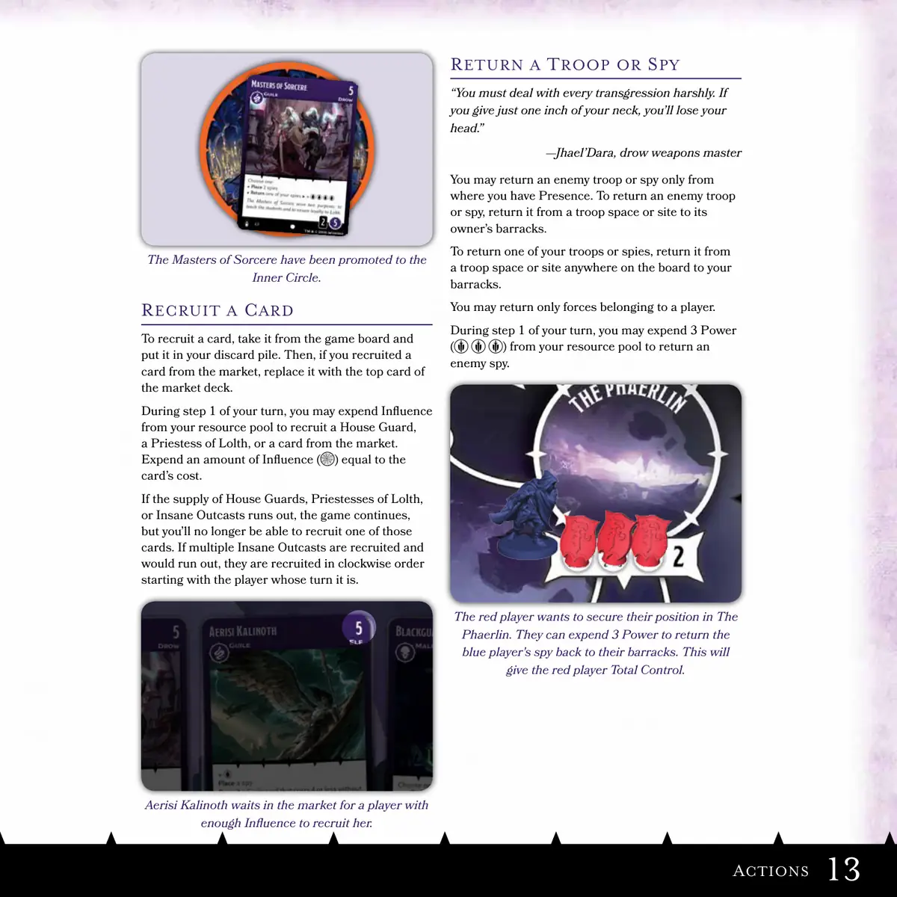
📝 第 15 页 AI 机翻对照（点击展开）
暗黑精灵法师已被晋升至内圈。
招募一张卡牌
要招募一张卡牌，从游戏版图上拿取它并将其放入你的弃牌堆。然后，如果你是从市场招募了一张卡牌，用牌库顶部的卡牌替换它。
在你的回合的第1步，你可以消耗资源池中的影响力（Influence）来招募一张卫兵（House Guard）、罗丝的女祭司（Priestess of Lolth）或市场中的一张卡牌。消耗等同于卡牌费用的数量影响力（Influence）（）。
如果卫兵、罗丝的女祭司或疯狂流亡者（Insane Outcasts）的供应耗尽，游戏继续，但你将不再能够招募那些卡牌之一。如果多个疯狂流亡者被招募并即将耗尽，它们从当前回合的玩家开始按顺时针顺序被招募。
艾瑞西·卡利诺斯（Aerisi Kalinoth）在市场中等待，等待有足够影响力的玩家来招募她。
返还一支军队或间谍
"你必须严厉对待每一次越轨行为。如果你让你的脖子退让一英寸，你就会失去你的头。"
——贾尔·达拉（Jhael'Dara），卓尔武器大师
你只能从你有存在感（Presence）的地方返还一支敌方军队或间谍。要返还一支敌方军队或间谍，将其从军队空间或地点返还到其所有者的兵营。
要返还你自己的军队或间谍之一，将其从版图上任意军队空间或地点返还到你的兵营。
你只能返还属于一名玩家的单位。
在你的回合的第1步，你可以消耗3点力量（Power）（）从你的资源池中返还一支敌方间谍。
红色玩家想要巩固他们在法尔林（The Phaerlin）的位置。他们可以消耗3点力量将蓝色玩家的间谍返还到其兵营。这将给予红色玩家完全控制（Total Control）。
行动
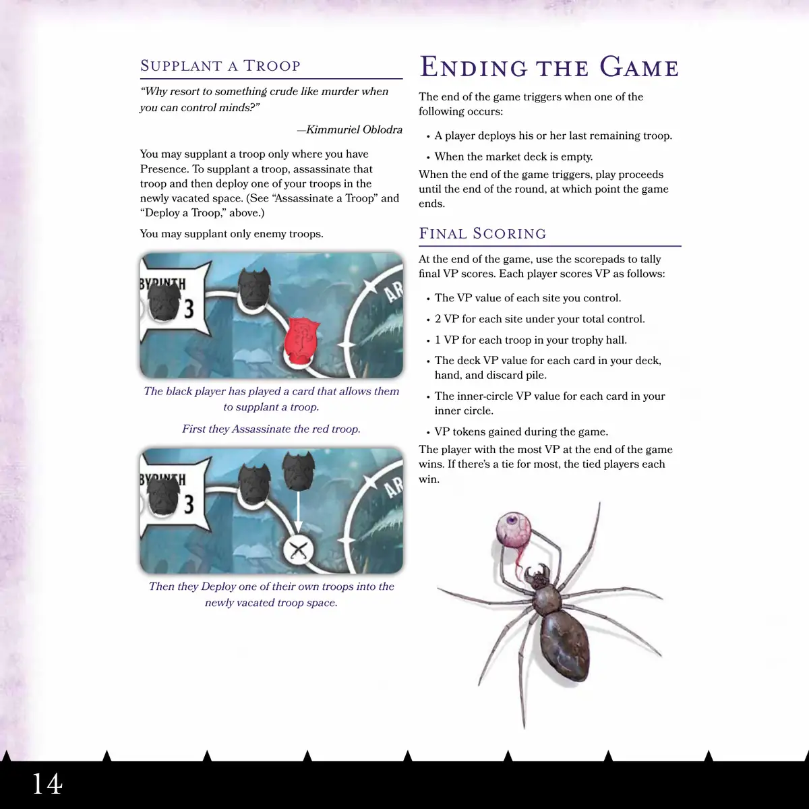
📝 第 16 页 AI 机翻对照（点击展开）
取代部队
"当你能够控制思想时，何必诉诸像谋杀这样粗鲁的手段？"
—Kimmuriel Oblodra
你只能在有"存在"(Presence)的地方取代部队。要取代部队，需刺杀该部队，然后在你新腾出的空间中部署一支你的部队。（参见上文"刺杀部队"和"部署部队"。）
你只能取代敌方部队。
黑方玩家打出了一张允许他们取代部队的卡牌。
首先他们刺杀了红方部队。
然后他们部署了自己的部队到新腾出的部队空间。
游戏结束
当发生以下情况之一时，触发游戏结束：
• 玩家部署了其最后剩余的部队。
• 当牌库(deck)为空时。
当游戏结束触发后，游戏继续进行直到本轮(round)结束，此时游戏正式结束。
最终计分
游戏结束时，使用记分板计算最终VP(胜利点)分数。每位玩家按以下方式获得VP：
• 你控制的每个地点(site)的VP价值。
• 你完全控制的每个地点获得2 VP。
• 你战利品厅(trophy hall)中的每支部队获得1 VP。
• 你的牌库、手牌(hand)和弃牌堆(discard pile)中每张卡牌的牌库VP价值。
• 你内圈(inner circle)中每张卡牌的内圈VP价值。
• 游戏过程中获得的VP指示物(token)。
游戏结束时拥有最多VP的玩家获胜。如果出现最高VP平局，则平局玩家均获胜。
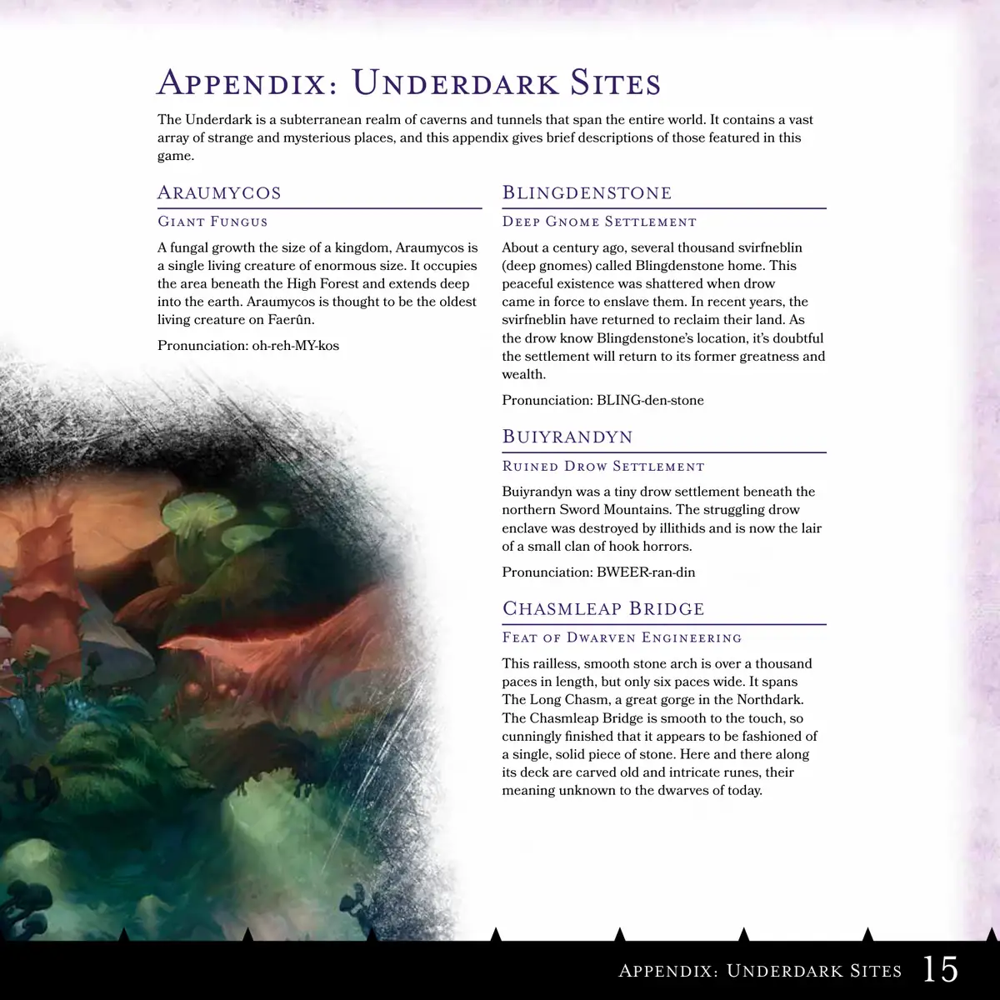
📝 第 17 页 AI 机翻对照（点击展开）
附录：幽暗地域地点 15
附录：幽暗地域地点
幽暗地域是一个横跨整个世界的洞穴和隧道构成的地下领域。它包含大量奇特而神秘的地方，本附录提供了游戏中出现的这些地点的简要描述。
Araumycos（阿拉乌米科斯）
巨型真菌
阿拉乌米科斯是一个王国大小的真菌生长物，是一个巨大的单一生物。它占据高森林（High Forest）下方的区域，并向地球深处延伸。阿拉乌米科斯被认为是费伦（Faerûn）上最古老的生物。
发音：oh-reh-MY-kos
Blingdenstone（布林登石）
深地侏儒定居点
大约一个世纪前，数千名斯弗内布林（svirfneblin，深地侏儒）将布林登石称为家园。当卓尔精灵（drow）大举入侵奴役他们时，这种和平的生活被打破。近年来，斯弗内布林已返回 reclaim 他们的土地。由于卓尔精灵知道布林登石的位置，该定居点不太可能恢复到昔日的辉煌和财富。
发音：BLING-den-stone
Buiyrandyn（布伊兰丁）
废弃的卓尔精灵定居点
布伊兰丁是北部剑山脉（Sword Mountains）下方的一个小型卓尔精灵定居点。这个挣扎中的卓尔精灵飞地被夺心魔（illithids）摧毁，现在是一个钩 horror 小氏族的巢穴。
发音：BWEER-ran-din
Chasmleap Bridge（峡谷飞跃桥）
矮人工程壮举
这座没有栏杆的光滑石拱桥长度超过一千步，但宽度只有六步。它横跨北幽暗地域（Northdark）的巨大峡谷——长峡（The Long Chasm）。峡谷飞跃桥触感光滑，工艺精湛，似乎是由一块完整的实心石头制成。桥面上各处雕刻着古老而复杂的符文，今天的矮人已不知其含义。
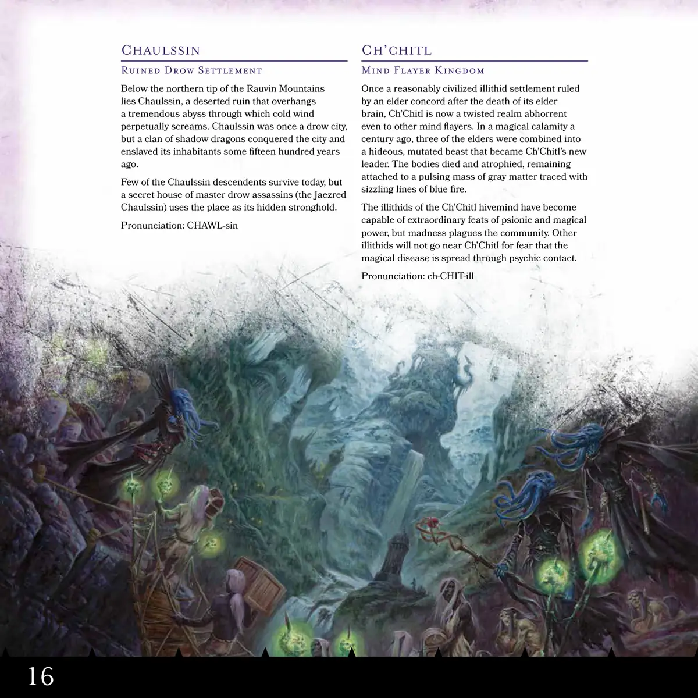
📝 第 18 页 AI 机翻对照（点击展开）
Chaulssin
卓尔废墟定居点
在劳文山脉（Rauvin Mountains）的北端下方
坐落着卓尔废墟定居点（Chaulssin），这是一个被遗弃的废墟，
悬于一个巨大的深渊之上，冰冷的风永远在其中呼啸。
卓尔废墟定居点曾是一座卓尔城市，
但大约一千五百年前，一个影龙氏族征服了这座城市
并奴役了其居民。
如今很少有卓尔废墟定居点的后裔存活，
但一个由卓尔刺客大师组成的秘密家族（Jaezred Chaulssin）
将这个地方用作其秘密据点。
发音：CHAWL-sin
Ch'chitl
夺心魔王国
在它的夺心魔主脑（elder brain）死后，
Ch'Chitl 曾是一个由一位长者议会（elder concord） reasonably 合理统治的夺心魔定居点，
但现在它是一个扭曲的领域，甚至其他夺心魔都厌恶它。
一个世纪前的一场魔法灾难中，
三位长者被融合成一个可怕的、变异的野兽，
成为了 Ch'Chitl 的新领袖。
他们的身体死亡并萎缩，仍然附着在一个
布满噼啪作响的蓝色火焰线条的灰色物质脉动团块上。
Ch'Chitl 集体意识中的夺心魔已经
能够实现非凡的念力和魔法能力壮举，
但疯狂困扰着这个社区。
其他夺心魔不会靠近 Ch'Chitl，
因为他们害怕通过心灵接触传播这种魔法疾病。
发音：ch-CHIT-ill
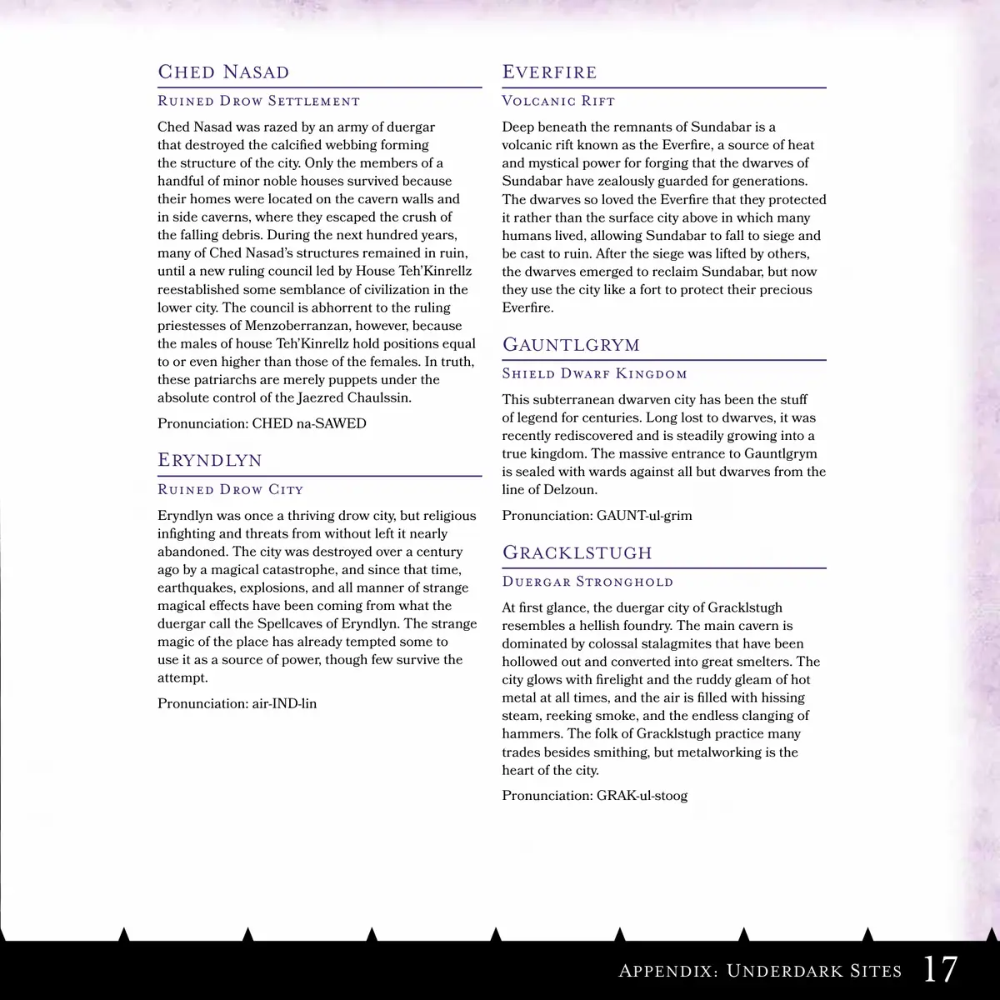
📝 第 19 页 AI 机翻对照（点击展开）
附录：幽暗地域地点 17
永焰火口
火山裂谷
在桑达巴遗迹的深处，有一个被称为永焰火口的火山裂谷，它是热力和神秘力量的源泉，桑达巴的矮人们世代热切地守护着它。矮人们如此热爱永焰火口，以至于他们守护它而非上方地表的城市——许多人类居住在那里，导致桑达巴被围攻并化为废墟。在其他人解除了围攻后，矮人们出现并重新夺回了桑达巴，但现在他们像堡垒一样使用这座城市，以保护他们珍贵的永焰火口。
格拉克斯图格
卓尔矮人要塞
乍看之下，卓尔矮人的城市格拉克斯图格 resembles a hellish foundry. 主洞穴被巨大的石笋所主导，这些石笋被掏空并改造成巨大的熔炉。这座城市始终闪耀着火光和热金属的暗红色光芒，空气中充满了嘶嘶的蒸汽、刺鼻的烟雾和永不停歇的锤击声。格拉克斯图格的居民除了锻造外还从事许多行业，但金属加工是这座城市的核心。
发音：GRAK-ul-stoog
岗特林姆
盾矮人王国
这个地下矮人城市几个世纪以来一直是传奇的素材。早已被矮人遗忘，最近才被重新发现，并稳步发展成为一个真正的王国。岗特林姆的巨大入口被符文封印，只有德祖恩家族的矮人才能通过。
发音：GAUNT-ul-grim
切德纳萨德
废弃的卓尔定居点
切德纳萨德被一支卓尔矮人军队摧毁，他们摧毁了构成城市结构的石化蛛网。只有少数小贵族家族的成员幸存下来，因为他们的家园位于洞穴壁上和侧洞穴中，他们在那里逃脱了坠落碎石的挤压。在接下来的百年里，切德纳萨德的许多建筑 remained in ruin，直到由泰克伦勒兹家族领导的新统治委员会在下城重新建立了一些文明的痕迹。然而，这个委员会被门佐贝兰赞的统治女祭司所憎恶，因为泰克伦勒兹家族的男性拥有与女性相等甚至更高的职位。事实上，这些族长只是在贾兹雷德·肖辛绝对控制下的傀儡。
发音：CHED na-SAWED
埃林德林
废弃的卓尔城市
埃林德林曾经是一个繁荣的卓尔城市，但宗教内斗和外部的威胁使其几乎被遗弃。一个多世纪前，这座城市被一场魔法灾难摧毁，从那时起，地震、爆炸和各种奇怪的魔法效果都来自卓尔矮人称为埃林德林法术洞穴的地方。这个地方的奇怪魔法已经诱惑了一些人将其用作力量来源，尽管很少有人能尝试幸存。
发音：air-IND-lin
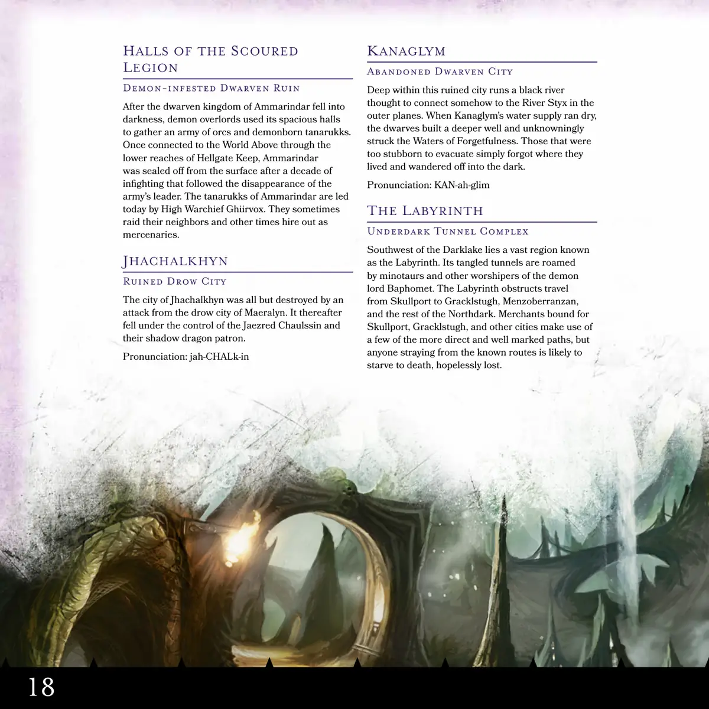
📝 第 20 页 AI 机翻对照（点击展开）
贾查尔金（Jhachalkhyn）
被摧毁的卓尔城市
贾查尔金城市几乎被来自玛埃林（Maeralyn）卓尔城市的攻击所摧毁。此后，它落入贾兹雷德·乔尔辛（Jaezred Chaulssin）及其影龙赞助者的控制之下。
发音：jah-CHALk-in
净化军团大厅（Halls of the Scoured）
恶魔滋生的矮人废墟
在矮人王国阿玛林达（Ammarindar）陷入黑暗后，恶魔领主们利用其宽敞的大厅聚集了一支兽人和恶魔混血塔纳鲁克（tanarukks）的军队。阿玛林达曾通过地狱之门要塞（Hellgate Keep）的下层区域与上层世界相连，但在军队领袖失踪后随之而来的十年内斗中，阿玛林达与地表世界隔绝。如今，阿玛林达的塔纳鲁克由高级酋长吉沃尔克斯（High Warchief Ghiirvox）领导。他们时而袭击邻居，时而雇佣为雇佣兵。
卡纳格林（Kanaglym）
废弃的矮人城市
在这座废城的深处流淌着一条黑河，据说以某种方式与外层位面的冥河（River Styx）相连。当卡纳格林的水源干涸时，矮人们建造了一口更深的井，无意中击中了遗忘之水（Waters of Forgetfulness）。那些过于顽固不愿撤离的人 simply 忘记了他们住在哪里，然后迷失在黑暗中 wander off into the dark。
发音：KAN-ah-glim
迷宫（The Labyrinth）
幽暗地域隧道群
暗湖（Darklake）西南部是一片被称为迷宫的广阔区域。其错综复杂的隧道被弥诺陶洛斯（minotaurs）和其他恶魔领主巴弗灭（Baphomet）的崇拜者所游荡。迷宫阻碍了从骷髅港（Skullport）到格拉克斯图格（Gracklstugh）、门佐巴兰赞（Menzoberranzan）以及北幽暗地域（Northdark）其他地区的旅行。前往骷髅港、格拉克斯图格和其他城市的商人使用一些更直接且标记清晰的路径，但任何偏离已知路线的人都可能饿死，绝望地迷失方向。
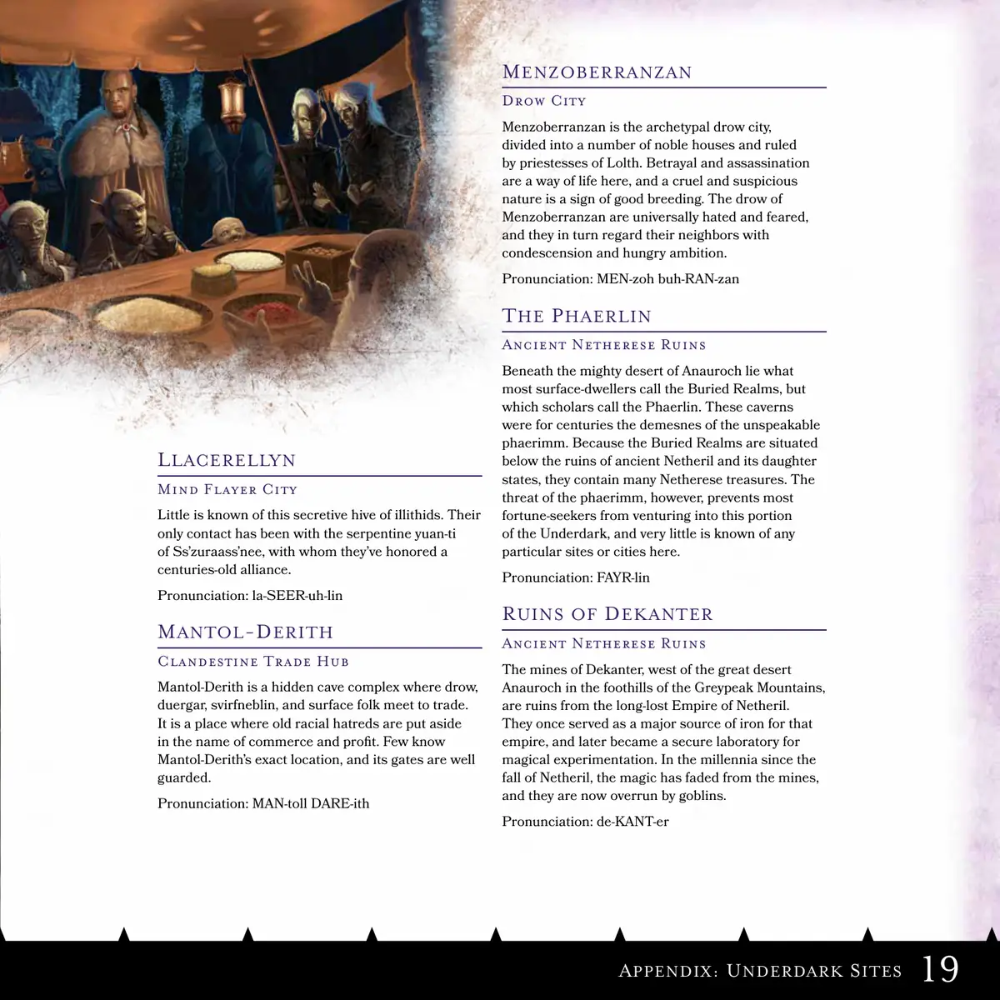
📝 第 21 页 AI 机翻对照（点击展开）
附录：幽暗地域地点 19
曼托尔-德里思
秘密贸易中心
曼托尔-德里思是一个隐藏的洞穴综合体，卓尔、杜尔加、斯布林夫布林和地表居民在此会面进行贸易。这是一个为了商业和利润而将古老的种族仇恨搁置的地方。很少有人知道曼托尔-德里思的确切位置，而且它的入口守卫森严。
发音：MAN-toll DARE-ith
法尔林
古代耐色瑞尔遗迹
在强大的阿纳乌洛克沙漠之下，是大多数地表居民所谓的"埋藏领域"，但学者们称之为法尔林。这些洞穴几个世纪以来都是不可言说的法里姆的领地。由于埋藏领域位于古代耐色瑞尔及其附属国遗迹的下方，它们包含许多耐色瑞尔珍宝。然而，法里姆的威胁阻止了大多数寻宝者冒险进入幽暗地域的这一部分，因此对这里的任何特定地点或城市知之甚少。
发音：FAYR-lin
门佐巴兰赞
卓尔城市
门佐巴兰赞是典型的卓尔城市，分为多个贵族家族，由罗丝的女祭司统治。背叛和暗杀在这里是一种生活方式，而残忍和多疑的特质是良好教养的标志。门佐巴兰赞的卓尔被普遍憎恨和恐惧，而他们则以居高临下的态度和贪婪的野心看待他们的邻居。
发音：MEN-zoh buh-RAN-zan
拉瑟雷林
夺心魔城市
对这个秘密的夺心魔蜂巢知之甚少。他们唯一的接触是与斯祖拉斯尼的蛇形尤提人，他们与后者保持了一个有着数百年历史的联盟。
发音：la-SEER-uh-lin
德坎特遗迹
古代耐色瑞尔遗迹
德坎特矿位于巨大的阿纳乌洛克沙漠以西，格雷皮克山脉的山麓，是早已消失的耐色瑞尔帝国的遗迹。它们曾作为该帝国铁矿石的主要来源，后来成为魔法实验的安全实验室。自从耐色瑞尔陷落以来的几千年里，魔法已经从矿中消退，现在它们被地精所占据。
发音：de-KANT-er
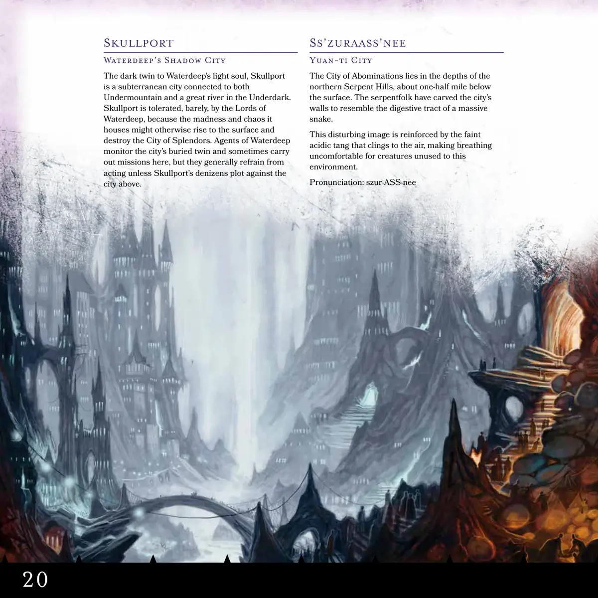
📝 第 22 页 AI 机翻对照（点击展开）
颅港
深水城的暗影之城
颅港是深水城光明灵魂的黑暗双胞胎，是一个连接着群山之下（Undermountain）和幽暗地域（Underdark）中一条大河的地下城市。深水城的领主们勉强容忍着颅港的存在，因为其中蕴含的疯狂与混乱可能会上升到地表，摧毁这座辉煌之城（City of Splendors）。深水城的特工监视着这座被掩埋的双子城，有时会在此执行任务，但他们通常避免采取行动，除非颅港的居民们密谋对抗上方的城市。
斯苏拉苏斯尼（Ss’zuraass'nee）
蛇人城
这座可憎之城（City of Abominations）位于北方蛇丘（Serpent Hills）的深处，地表下方约半英里处。蛇人族（serpentfolk）将城墙雕刻成巨型蛇类的消化道。这种令人不安的形象因空气中弥漫的微弱酸味而得到强化，使不习惯此环境的生物感到呼吸不适。
发音：szur-ASS-nee
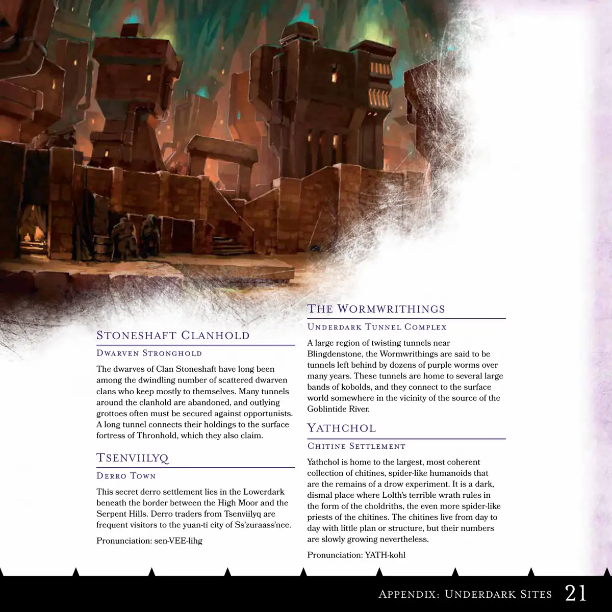
📝 第 23 页 AI 机翻对照（点击展开）
附录：幽暗地域地点 21
蠕虫迷宫（The Wormwrithings）
幽暗地域隧道群
布林登石（Blingdenstone）附近的一个大型扭曲隧道区域，蠕虫迷宫据说是数十条紫色蠕虫（purple worms）多年来留下的隧道。这些隧道是几个大型蜥蜴人（kobolds）部落的家园，它们在哥布林潮河（Goblintide River）源头附近的某处连接到地表世界。
亚斯卓尔（Yathchol）
蛛人族（Chitine）定居点
亚斯卓尔是最大、最连贯的蛛人族聚集地，蛛人族是类人蜘蛛生物，是卓尔（drow）实验的残余物。这是一个黑暗、阴郁的地方，洛丝（Lolth）可怕的愤怒以蛛人族祭司（choldriths）——那些更加类蜘蛛的祭司——的形式统治着这里。蛛人族过着得过且过的日子，几乎没有计划或结构，但他们的数量仍在缓慢增长。
发音：YATH-kohl
石 shaft 氏族要塞（Stoneshaft Clanhold）
矮人要塞
石 shaft 氏族的矮人长期以来一直是日益减少的分散矮人氏族中大多保持独立的氏族之一。氏族要塞周围的许多隧道已被废弃，外部的洞穴常常必须防范机会主义者。一条长长的隧道将他们的领地与地表要塞索恩霍德（Thronhold）连接起来，他们也声称拥有该要塞。
曾维利克（Tsenviilyq）
瘦弱人（Derro）城镇
这个秘密的瘦弱人定居点位于高沼地（High Moor）和蛇丘（Serpent Hills）边境下方的下幽暗地域（Lowerdark）。来自曾维利克的瘦弱人商人是蛇人城斯苏拉苏斯尼（Ss'zuraass'nee）的常客。
发音：sen-VEE-lihg
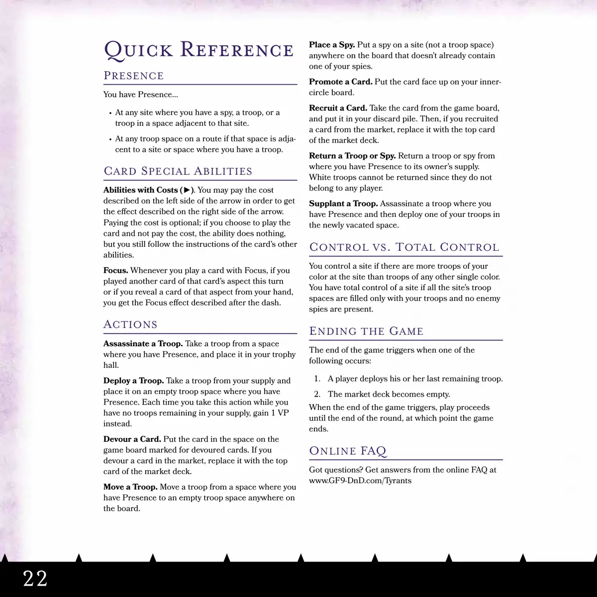
📝 第 24 页 AI 机翻对照（点击展开）
快速参考
存在
放置一个间谍。将一个间谍放置在版图上任意一个不已有你间谍的地点（非部队格）。
提升一张卡牌。将卡牌正面朝上放置在你的内圈版图上。
招募一张卡牌。从游戏版图上取走卡牌，并将其放入你的弃牌堆。然后，如果你从市场招募了一张卡牌，用牌库顶部的卡牌替换它。
返还一个部队或间谍。将一个部队或间谍从你有存在的地方返还给其拥有者的储备库。白色部队不能被返还，因为它们不属于任何玩家。
取代一个部队。在你有存在的地方暗杀一个部队，然后在你新腾出的空间中部署一个你的部队。
你有存在...
• 在你有一个间谍、一个部队，或一个位于该地点相邻格的部队的任何地点。
• 在一条路线上的任何部队格，如果该格与你有一个部队的地点或空间相邻。
卡牌特殊能力
带消耗的能力（▶）。你可以支付箭头左侧描述的消耗，以获得箭头右侧描述的效果。支付消耗是可选的；如果你选择打出卡牌但不支付消耗，该能力不会生效，但你仍然遵循卡牌其他能力的说明。
聚焦。每当你打出一张带有聚焦的卡牌，如果你本回合打出了该卡牌同方面的另一张卡牌，或者从你的手牌中展示了一张该方面的卡牌，你将获得破折号后描述的聚焦效果。
行动
暗杀一个部队。从一个你有存在的地方取走一个部队，并将其放置在你的战利品厅中。
部署一个部队。从你的储备库中取走一个部队，并将其放置在一个你有存在的空部队格上。当你没有剩余部队在储备库中时，每次你执行此行动，获得1VP代替。
吞噬一张卡牌。将卡牌放置在游戏版图上标记为被吞噬卡牌的空间中。如果你在市场中吞噬了一张卡牌，用牌库顶部的卡牌替换它。
移动一个部队。将一个部队从你有存在的地方移动到版图上任意一个空的部队格。
控制与完全控制
如果一个地点的你的颜色部队多于任何其他单一颜色的部队，你就控制该地点。
如果一个地点的所有部队格仅被你的部队填满，且没有敌方间谍存在，你就对该地点拥有完全控制。
游戏结束
当发生以下情况之一时，触发游戏结束：
- 一个玩家部署了他或她的最后一个剩余部队。
- 牌库变空。
当游戏结束触发时，游戏继续进行直到该轮结束，此时游戏结束。
在线FAQ
有问题？请访问www.GF9-DnD.com/Tyrants获取在线FAQ的答案。